-
Desvendando o MKT Digital
Ter um bom posionamento online pode ser um grande aliado para melhorar os resultados da sua empresa, mas o Marketing Digital vai além de estar presente nas Redes Sociais.
-
Gestão de redes sociais
-
Gerenciar as informações que chegam por meio dos relátarios automatizados das redes sociais, e aplicá-las em novas ações. Esses dados revelam do público-alvo e por isso, precisam ser bem avalidos por especialistas.
-
Comunicação com a base de Leads
-
É muito importante manter o relacionamento com a base de Leads, ou seja, com os clientes em potencial, atraindo-os para os produtos e serviços das empresas.
-
Newsletter
-
Como o próprio nome ja sugere, é um modelo de e-mail informativo. Novos posts do blog da marca por exemplo, cabem muito bem aqui.